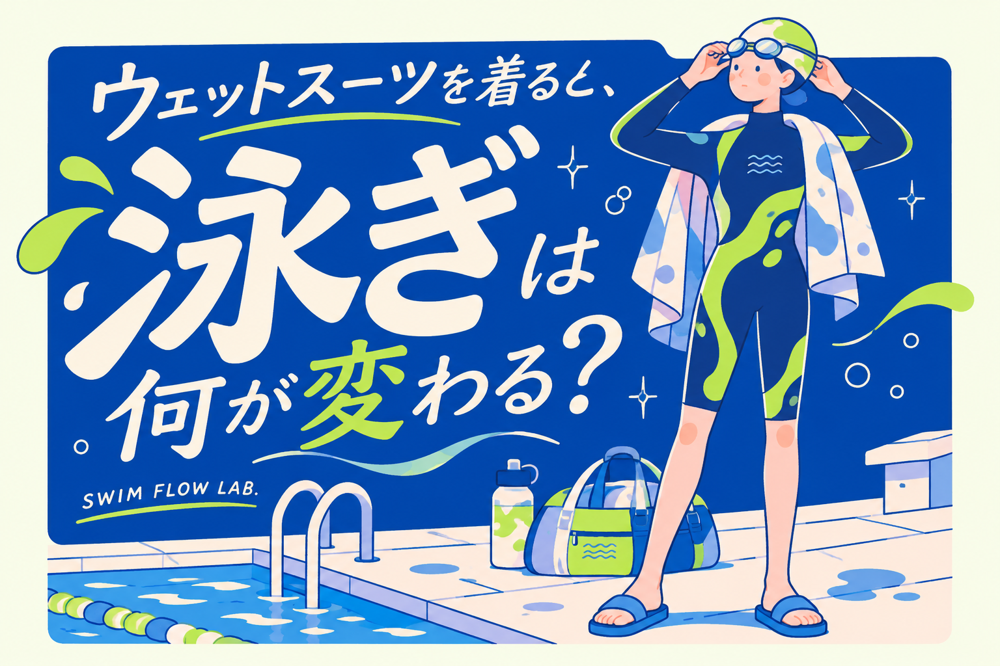

SWIMMING RESEARCH / 25
ウェットスーツを着ると、泳ぎは何が変わる？
「浮く」と「速い」を分けて、道具が変える条件を読む
2026年11月15日 公開

ウェットスーツを着た人が、いつもよりすいすい泳いでいる。そんな場面を見たら、「これを着れば、自分も速くなるのかな」と思うかもしれません。反対に、慣れないスーツで肩が動かしにくく感じる人もいるでしょう。
ウェットスーツは、身体と水の関係を変える道具です。研究では抵抗が小さくなった例があります。ただし、それは「全員のタイムが同じ割合で縮む」「着るだけで泳ぎ方が身につく」という意味ではありません。
今日は買う製品を決める話ではなく、スーツあり・なしの記録をどう読み、試す機会があったら何を確かめるかを考えます。
着るものが変わると、比べる条件も変わる
ふつうの水着とウェットスーツの違いは、見た目の色や袖だけではありません。ウェットスーツには、細かな気泡を含む素材などが使われています。水中で身体を支える働きや、熱の逃げ方、身体を覆う範囲が変わります。
「浮力」は、水が物を上へ押す力のことです。「抵抗」は、水の中を進む動きを妨げる力。どちらも水から受ける力ですが、見る方向が違います。上へ支えられることと、前へ進みやすくなることを、同じ一言の「楽」にまとめないようにしましょう。
上へ支える力と、進むのを妨げる力
水が身体を上へ支える方向を見る。
身体が進む向きと反対の力を見る。
同じ泳者に働く上向きの浮力と、進行と逆向きの抵抗を別々に示す。矢印は方向のみを表す。
2022年のレビューは、1986〜2021年の26研究を整理しています。長袖で手首・足首まで覆うもの、腕を覆わないものなど、同じ「ウェットスーツ」でも形は複数。泳者の経験や試した水温、プールか屋外かも違っていました。研究の整理を読む
だから、昨日は水着、今日はウェットスーツで泳いでタイムが変わっても、それだけで自分の技術が変わったとは言えません。追い風の日と向かい風の日の自転車を、時間だけで比べないのと似ています。この自転車は考え方のたとえで、水中の測定結果ではありません。
道具の助けがある記録も、大切な自分の記録です。「助けがあるから意味がない」と消す必要はありません。記録の横に「何を着て泳いだか」を残すと、後で同じ条件の記録を探しやすくなります。
「抵抗が約14%小さい」は、何が14%なの？
1989年のToussaintらの研究は、男性8人・女性4人の計12人を対象に、スーツあり・なしのクロールを比べました。水中に並べた板を手で押す装置を使い、泳いでいるときの抵抗を調べています。自由に泳いだレースの順位だけを比べた実験ではありません。
秒速1.25m、つまり1秒に1.25m進む速さで比べたとき、抵抗はスーツなしの48.7Nから、ありの41.8Nへ小さくなりました。Nはニュートンと読み、ここでは水から受ける抵抗の力の単位です。差は6.9N。スーツなしを基準にすると、約14%小さいという結果です。原著の抄録
比べたのは、同じ速さでの抵抗
抵抗48.7N。比較の基準。
抵抗41.8N。差は6.9N。
同じ泳速1.25m/秒で、スーツなし48.7Nとスーツあり41.8Nの抵抗を比べる。約14%はタイムではなく抵抗の減少。
図の二つの数字は、同じ速さで泳いだときの抵抗です。48.7Nと41.8Nの差は6.9Nで、もとの48.7Nに対して約14%小さくなっています。泳ぐ時間を比べた数字ではないので、「100秒が86秒になる」と読み替えることはできません。
少し難しければ、まず数字を計算しなくても大丈夫です。図の見出しを読み、「同じ速さで泳ぐとき、水から受ける抵抗を比べた」と言えれば、この結果の入口はつかめています。その後で、48.7と41.8が何の数字かを確かめましょう。
この実験は当時のスーツと測定装置で行われたものです。今売られている全製品の順位や、あなたのタイムを予言する結果ではありません。それでも、「着るものの違いが、同じ速さで泳ぐ条件を変えうる」という具体的な例になります。
なぜ変わったかは、一つに決めつけない
「よく浮けば、抵抗も減るのでしょう？」。これは研究を読んで自然に浮かぶ問いです。身体の位置が変われば、進む向きから水に向かい合う形も変わります。ただし、泳いでいる身体は動き続けています。浮力が増えた分だけ抵抗が同じ割合で減る、という足し算ではありません。
1989年の研究者たちは、浮力による身体位置の変化が抵抗の減少に関わった可能性を考えています。一方で、表面との摩擦なども関わりうると述べています。測れたのは抵抗の違いであり、その原因のすべてを一つずつ切り分けたわけではありません。
分かったことと、その説明を分ける
同じ泳速で、抵抗に差があった。
浮力や身体位置、表面との摩擦などが関わる可能性。
浮き方と腕の動かしやすさは、それぞれどう感じる？
実際に測った抵抗の差と、浮力・身体位置・表面などの考えられる説明を分ける。
そこで図では、「測ったこと」と「考えられる説明」を分けました。測ったのは抵抗の差。浮力や身体の位置などは、その差を説明するために考えられる要素です。候補を、そのまま確定した原因へ読み替えないことが大切です。
また、スーツで浮き方が変わっても、腕を回す感じまで必ず快適になるとは限りません。素材や覆う範囲が違えば、身体を動かしたときの感じも確かめたい点です。レビューが異なる形や経験の泳者を分けているのは、その違いをひとまとめにしないためでもあります。
速い記録が出たとき、「腕のかき方が急に上達した」と喜ぶ前に、スーツという条件を思い出す。反対に動かしにくいとき、自分の泳ぎが悪いとすぐ決めない。道具と身体の両方を見ることで、記録の読み方に余裕ができます。
試すなら、速さより先に条件をメモする
もし施設で使用が認められ、指導者などと試せる機会があるなら、最初に「何を着たか」「どこで泳いだか」を記録します。屋外とプール、違う距離、違う水温を混ぜたまま、スーツの効果だけを取り出そうとしないことが出発点です。
水に入る前には、身体に合うサイズか、呼吸や腕の動きに支障がないかを確認します。締めつけや苦しさを我慢してまでタイムを比べる必要はありません。施設や主催者の使用条件に従い、スーツがあることを理由に一人で遠くまで泳がないでください。
一回の記録を、三つに分ける
- 1泳ぐ前
スーツ・場所・距離を記す。動きや呼吸に支障がないか確認。
- 2泳いだ後
支えられる感じと腕の動かしやすさを別々に書く。
- 3比べるとき
同じ条件の記録を探す。違いがあれば横に残す。
スーツや場所などの条件、浮き方と腕の感じ、比較する記録を別の欄に残す。
泳いだ後は、「身体を支えられる感じ」「腕を動かす感じ」「同じ区間の時間」を分けて書きます。三つが同じ答えになるとは限りません。速かったけれど腕は窮屈だった、楽だったけれど今日は水温も違った。そう書ける方が、単に「よかった」より次へつながります。
もし窮屈さが気になったら、そのまま長く泳いで慣れようと決めず、サイズや着方、試した条件を担当者に相談します。違和感がなくても、一回の記録だけで最適な製品や練習法は決まりません。水着で泳ぐ記録も別に残しておけば、目的に合う比較ができます。
道具の違いをメモすることは、自分の頑張りを小さく見ることではありません。「今日は自分と道具で、こう泳いだ」と正確に残すことです。どんな条件で泳ぎやすかったのかが分かると、次に試すことも具体的になります。
研究から分かったこと
- 研究の目的
- ウェットスーツの着用で泳ぐ条件がどう変わるかを、抵抗の測定と研究レビューから読みました。
- 何を比べたか
- 原著は12人でスーツの有無を比較。秒速1.25mの同じ速さでの抵抗を測りました。
- 何が分かったか
- 抵抗は48.7Nから41.8Nへ小さくなりました。これは抵抗の変化であり、タイムが14%縮むという結果ではありません。
- この記事の答え
- スーツは身体と水の関係を変えます。着用の有無が違う記録から、技術の上達だけを取り出すことはできません。
スーツありで記録が変わったとき、その差を全部「上達」や「道具のおかげ」に分けることはできません。けれど、「何を着て、どんな条件で泳いだか」を残せば、違う記録を同じ物差しで比べる間違いは減らせます。タイムの横に書く道具の名前にも、意味があります。
参考文献と確認範囲
- Toussaint HM, et al. (1989). Effect of a triathlon wet suit on drag during swimming. Medicine & Science in Sports & Exercise, 21(3), 325–328.
原著抄録を確認。測定条件と48.7／41.8Nを採用。全文の詳細手順は未確認。
- Gay A, et al. (2022). The Impact of Wetsuit Use on Swimming Performance, Physiology and Biomechanics: A Systematic Review. Physiologia, 2, 198–230.
本文の対象条件・方法・結果・考察を確認。26研究の整理を参照。各収載研究をすべて独立に確認したわけではありません。